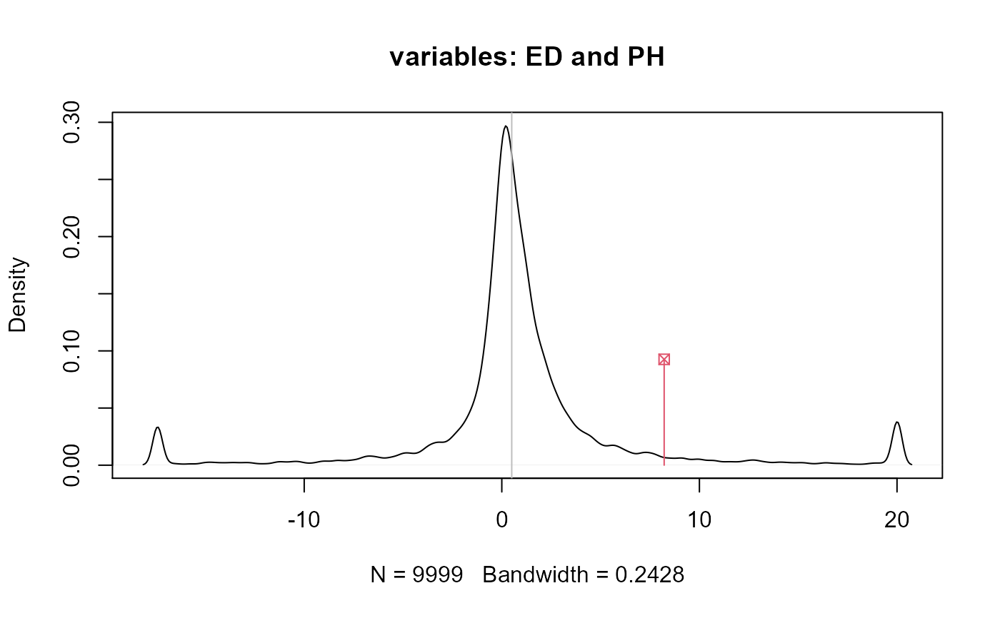

gencovtest.Rdgencovtest() tests genetic covariance components from a MANOVA model. Two different approaches can
be used: (I) a test statistic that takes into account the genetic and environmental effects and (II) a test
statistic that only considers the genetic information. The first type refers to tests based on the mean
cross-products ratio, whose distribution is obtained via Monte Carlo simulation of Wishart matrices. The
second way of testing genetic covariance refers to tests based upon an adaptation of Wilks' and Pillai's
statistics for evaluating independence of two sets of variables. All these tests are described by Silva (2015).
# S3 method for manova gencovtest(obj, geneticFactor, gcov = NULL, residualFactor = NULL, adjNrep = 1, test = c("MCPR", "Wilks", "Pillai"), nsim = 9999, alternative = c("two.sided", "less", "greater")) # S3 method for gencovtest print(x, digits = 4, ...) # S3 method for gencovtest plot(x, var1, var2, ...)
| obj | an object of class |
|---|---|
| geneticFactor | a character indicating the genetic factor from which to test covariance components. It must be declared as a factor in the manova object. |
| gcov | optional; a matrix containing estimates of genetic covariances to be tested. If
|
| residualFactor | optional; a character indicating a source in the manova model to be used as
error term. If |
| adjNrep | a correction index for dealing with unbalanced data. See details. |
| test | a character indicating the test. It must be on of the following:
|
| nsim | the number of Monte Carlo simulations. Used only if |
| alternative | the type of alternative hypothesis. Used only if |
| x | an object of class |
| digits | the number of digits to be displayed by the print method. |
| var1 | a character of integer indicating one of the two response variable or its position. |
| var2 | a character of integer indicating one of the two response variable or its position. |
| ... | further arguments. |
The genetic covariance matrix is currently estimated via method of moments, following the equation: $$G = (Mg - Me) / (nrep * adjNrep)$$ where \(Mg\) and \(Me\) are the matrices of mean cross-products associated with the genetic factor and the residuals, respectively; \(nrep\) is the number of replications, calculated as the ratio between the total number of observations and the number of levels of the genetic factor; \(adjNrep\) is supposed to adjust nrep, specially when estimating \(G\) from unbalanced data.
An object of class gencovtest, a list of
a p-dimensional square matrix containing estimates of the genetic covariances.
a p-dimensional square matrix containing estimates of the genetic correlations.
the test (as input).
a p-dimensional square matrix containing the test statistics.
If test = "MCPR" the mean cross-products ratios are computed; if test = "Wilks"
the Wilks' Lambda is; and test = "Pillai" results on Pillai's \(Tn\).
a p-dimensional square matrix containing the associated p-values.
the type of alternative hypothesis (as input).
a p-dimensional square matrix containing the Chi-square (D.f. = 1) approximation for Wilks's and Pillai's statistics. Stored only if one of these two tests is chosen.
an array consisting of nsim p-dimensional matrices containing the simulated mean
cross-products ratios.
the number of degrees of freedom associated with the genetic factor.
the number of degrees of freedom associated with the residual term.
Silva, A.R. (2015) On Testing Genetic Covariance. LAP Lambert Academic Publishing. ISBN 3659716553
Anderson Rodrigo da Silva <anderson.agro@hotmail.com>
When using the MCPR test, be aware that dfg should be equal or greater than the number of variables (p).
Otherwise the simulation of Wishart matrices may not be done.
A collinearity diagnosis is carried out using the condition number (CN), for the inferences may be affected by the quality of \(G\). Thus, if CN > 100, a warning message is displayed.
#> Df Pillai approx F num Df den Df Pr(>F) #> family 4 2.2699 3.9361 16 48 0.0001151 *** #> env 3 1.6963 3.5782 12 33 0.0018017 ** #> Residuals 12 #> --- #> Signif. codes: 0 '***' 0.001 '**' 0.01 '*' 0.05 '.' 0.1 ' ' 1# Example 1 - MCPR t1 <- gencovtest(obj = M, geneticFactor = "family")#> Warning: the genetic covariance matrix presents severe collinearity#> #> Genetic Covariance Test #> #> Genetic (Co)variances and Correlations (upper triangular): #> NKPR ED CD PH #> NKPR 4.5105 0.7641 0.6817 0.1268 #> ED 0.5148 0.1006 1.0186 0.1755 #> CD 0.1486 0.0332 0.0105 -0.1109 #> PH 0.0370 0.0077 -0.0016 0.0189 #> #> Test: MCPR #> Alternative hypothesis: two.sided #> #> Mean Sq and Cross-Prods Ratios and p-values (upper triangular) #> based on 9999 estimates: #> NKPR ED CD PH #> NKPR 4.9312 0.0191 0.0690 0.2388 #> ED 12.8014 21.6422 0.0016 0.0989 #> CD 6.3903 11.2840 4.8367 0.6313 #> PH 3.3012 8.2161 -0.7012 8.4603# Example 2 - Pillai t2 <- gencovtest(obj = M, geneticFactor = "family", test = "Pillai")#> Warning: the genetic covariance matrix presents severe collinearity#> #> Genetic Covariance Test #> #> Genetic (Co)variances and Correlations (upper triangular): #> NKPR ED CD PH #> NKPR 4.5105 0.7641 0.6817 0.1268 #> ED 0.5148 0.1006 1.0186 0.1755 #> CD 0.1486 0.0332 0.0105 -0.1109 #> PH 0.0370 0.0077 -0.0016 0.0189 #> #> Test: Pillai #> #> Chi-Sq (df = 1) approx. and p-values (upper triangular): #> NKPR ED CD PH #> NKPR NA 0.1265 0.1728 0.7997 #> ED 2.3355 NA 0.0416 0.7256 #> CD 1.8588 4.1500 NA 0.8245 #> PH 0.0644 0.1232 0.0492 NA# End (not run)